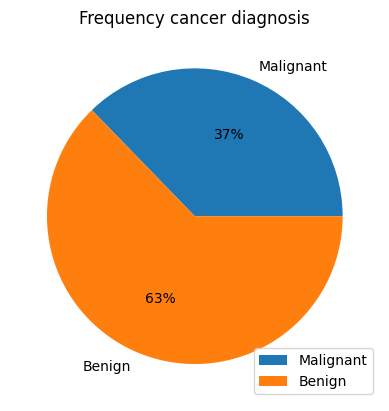
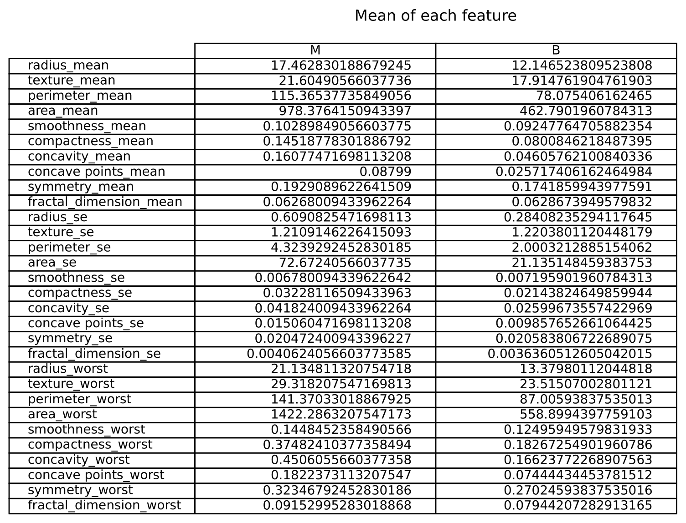
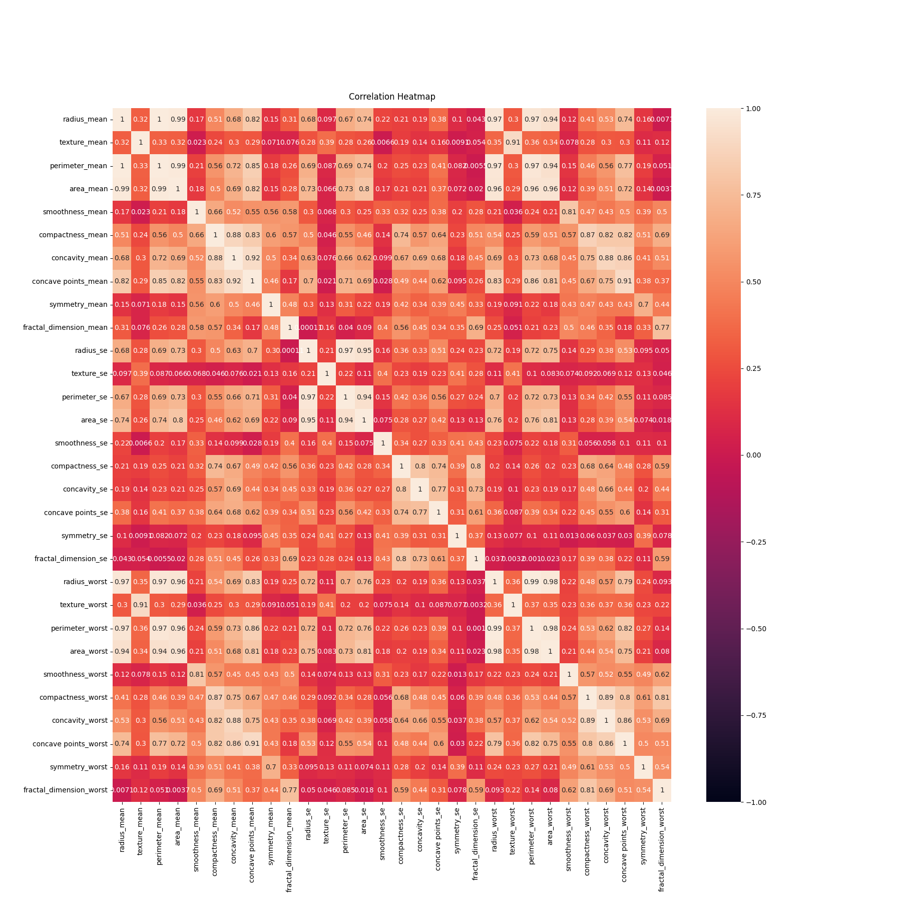
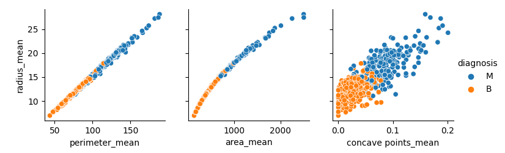
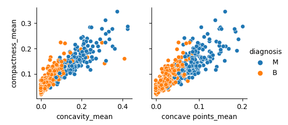

Cancer Project
Exploring and analysing cancer data
Abstract
Understanding cancer has never been more crucial than it is today. Cancer ranks among the top causes of death worldwide, making it a huge concern. Figuring out the ins and outs of cancer doesn't just add to our medical knowledge; it also helps shape how we approach healthcare rules, treatments, and how well patients do.
Digging into different aspects of cancer, gives us a better idea of how it works. This info boosts the creation of better tools to diagnose it, new and smart treatments, and ways to personalize care for each patient. Plus, by cracking the code of cancer, we could catch it early, which makes a big difference in treatment success.
We've got resources like Kaggle, a data hub, that lets scientists and data experts team up to study cancer data together. Using math and AI, we can find hidden patterns, connections, and clues that were impossible to spot in the heaps of data before.
This examination is based on data gathered from the Kaggle repository (Cancer data) . In this study, we will delve into the morphometric characteristics of tumors. We will establish connections between these features and a designated target attribute, namely diagnosis, which is categorized into benign and malignant classes. Subsequently, a classification model will be constructed to discern instances of cancer.
Dataset explanation
Attribute Information:
- 1. id
- 2. diagnosis (M=Malignant, B=Benign)
Morphometric Features:
- a. radius (measure from the center of the tumor util the border)
- b. texture (standard deviation of gray-scale values)
- b. perimeter (measure of a turn around of the tumor border)
- c. area
- d. smoothness mean (how much the surface is rough or smooth)
- e. compactness (perimeter^2 / area - 1.0)
- f. concavity (severity of concave points along the nuclear border)
- g. concave points (number of concave points along the nuclear border)
- h. symmetry
- i. fractal dimension (“coastline approximation” - 1)
OBS.: Coastline approximation is a concept in fractal geometry that refers to the process of estimating the fractal dimension of a complex and irregular shape.
As stated by our analysis, the most tumors are benign. One reason for that is the immune system actively monitors and targets abnormal cells. Benign tumors are less likely to evade the immune response due to their less aggressive nature, allowing the immune system to keep them in check.
"A benign tumor is a mass of cells (tumor) that does not invade neighboring tissue or metastasize (spread throughout the body, like malignant). Compared to malignant (cancerous) tumors, benign tumors generally have a slower growth rate. Benign tumors have relatively well differentiated cells. They are often surrounded by an outer surface (fibrous sheath of connective tissue) or stay contained within the epithelium. Common examples of benign tumors include moles and uterine fibroids." (Benign tumor)
If you notice any of these symptoms bellow, as advised by Harvard University (Cancer Prevention), it's important to consult a doctor:
- C: Change in bowel or bladder habits
- A: A sore that does not heal
- U: Unusual bleeding or discharge
- T: Thickening or lump in the breast or elsewhere
- I: Indigestion or difficulty in swallowing
- O: Obvious change in a wart or mole
- N: Nagging cough or hoarseness
Another information we can use is looking to the means of each feature when is a malignant or benig tumor. In the table bellow, the mean of the most features are high for the malignant diagnosis. Which is an acceptable assumption when a malignant tumor is more agressive and try to replicate wildly.
Looking the table we can see some features are not different in their means. The means are 'fractal_dimension_mean', 'texture_se', 'smoothness_se','symmetry_se' and 'fractal_dimension_se'. This features will be dropped. Now we must see the relation between the features by using pearson correlation. The table bellow show theirs relation. The values are between -1 and 1, where -1 indicate anticorrelation, 0 are not correlated and 1 are very correlated.
Looking in another way we have features highly correlated:
- a. radius_mean - perimeter_mean, area_mean, concave_points
- b. compacteness - concavity_mean, concave_points
Now we will make a scatter plot to se the relation between them and at the same time separate by diagnosis classes:
 We can see clearly that there is a vertical line in each graph that separates the class diagnosis. The information that we can get from it is, the higher the radius, perimeter, area, compactness, concavity and number of concave points, more likely to be a malignant tumor. To see more about it, with tecnical terms, visit: Cancer Project